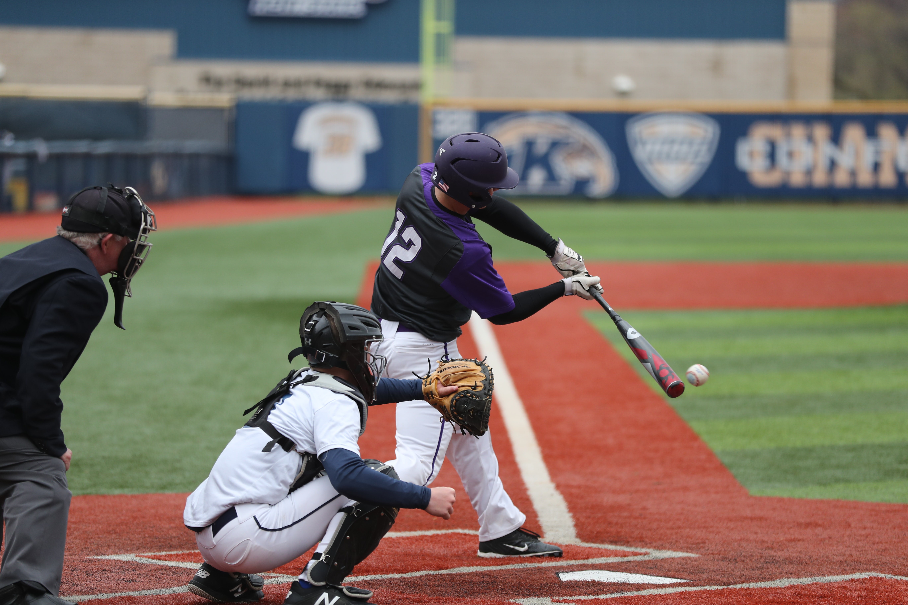

Rules of Attack
공격팀의 목표는 타자를 베이스에 출루시켜, 주자가 홈에 들어와 득점을 하는 것입니다. 반대로 수비팀의 목표는 상대팀 타자가 주자가 되고, 주자가 진루하는 것을 막는 것입니다.
각 팀은 경기 시작 전, 타격 순서와 수비 위치가 적혀있는 타순표를 심판에게 제출해야 합니다. 타순표에는 교체 가능 선수의 명단도 포함되어 있어야 하지만, 명단에 기재되지 않은 선수의 출전을 제한할 수는 없습니다. 경기 중 타순의 변경은 인정되지 않지만, 후보 선수와 교체는 가능합니다.
타자는 본인의 타순에 타자석에 들어가야 합니다. 투수가 셋 포지션에 들어가거나, 와인드업을 진행하였을 경우 타자석에서 벗어날 수 없습니다. 타자는 주자가 되어 출루하는 것을 목표로 하여 타석에서 여러 가지 행동을 할 수 있습니다.
다음으로 타자가 주자가 되는 경우를 말씀드리겠습니다. 첫 번째는 페어 볼을 친 경우입니다. 투수가 던진 공을 타자가 배트로 쳐, 파울 라인 안쪽에 떨어지는 것을 페어볼이라고 합니다. 타자가 페어 볼을 쳐 바닥에 떨어진 경우 타자는 주자가 될 수 있습니다.
두 번째는 포수 스트라이크 낫 아웃의 상황입니다. 낫 아웃은 2아웃이거나, 주자가 1루에 없을 경우, 포수가 3번째 스트라이크로 선언된 투구를 잡지 못하는 것을 말합니다. 프로 경기에서 타자의 주루보다 포수의 송구가 더 빠르기 때문에 실책을 범하는 경우가 아니라면, 대체로 낫 아웃은 아웃 처리가 됩니다.
그런데 2019년 6월 12일 LG와 롯데의 경기에서 재미있는 상황이 펼쳐졌습니다. 한국 프로야구 최초로 낫 아웃으로 끝내기를 만드는 상황이 그것입니다. 연장 10회 말 LG의 공격, 오지환 헛스윙 삼진의 상황에서 공이 포수 나종덕의 글러브를 맞고 튕겨져 나오면서 낫아웃 상황이 펼쳐졌습니다. 나종덕이 1루로 악송구를 하는 사이 3루 주자가 홈을 밟고, 스코어 3:4로 경기가 마무리되었습니다.
세 번째는 심판원이 4구를 선언한 경우입니다. 감독의 판단에 따라 투수가 던진 공의 카운트가 4개의 볼로 채워진 경우를 '볼넷'이라고 부르며 타자가 진루할 수 있는 상황을 의미합니다.
마지막으로 공이 타자의 몸에 맞은 경우입니다. 이를 데드볼이라고 합니다. 단, 타자가 투구를 피하지 않고 의도적으로 맞거나, 스트라이크 존에서 스트라이크 존에서 투구에 맞은 경우는 스트라이크 선언이 됩니다. 데드볼 선언이 되거나 4구 선언이 된 경우를 사사구라고 하며, 이 경우 타자가 출루하게 되고, 1루에 있던 주자는 한 베이스 진루하게 됩니다.